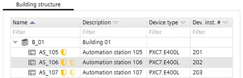

BACnet/SC
The BACnet/SC data link allows you to create secure connections between the devices within a BACnet network. Communication is thus authenticated and encrypted. Communication is also possible between devices in different private IP-Networks. As of writing, the current Desigo system supports a building hub, multiple floor hubs, failover hubs and nodes1, consisting of the Desigo CC management station, room controllers and system controllers2.
1 Indicative figure, actual Desigo system limits depend upon exact topology and load.
2 Please consult the respective products’ datasheets for more details on their respective BACnet/SC support, for example, which minimum firmware version is required, node or hub functionality supported and system limits.
For further information on BACnet/SC, refer to the chapter on BACnet/SC networks in document A6V11159798 Application Guide for BACnet Networks in Building Automation.
To become more familiar with the functionality, watch the BACnet/SC video (on YouTube).
1 | Task selector | 2 | Building structure |
3 | BACnet/SC topology | 4 | Toolbar |
5 | Details pane |
|
|
① Task selector
Task | Description |
|---|---|
Building structure | |
Central functions | |
Device list | |
Application & device overview | |
Certificates management | |
Network check | |
BACnet/SC |
② Building structure
Setting | Description | |
|---|---|---|
Name | Shows the name of the building, floor, device etc. The names can be edited in the properties window. A symbol shows the function of the device. | |
Device is a hub. If a PXC5/7 device is configured as a BACnet/SC hub, BACnet routing is for BACnet/SC activated at the same time. | ||
For this device, the primary hub is assigned to an external 3rd party hub.  Note: There is no automatic verification of whether the address to the 3rd party hub is correct.
| ||
Device is a node with a primary hub. | ||
Invalid configuration. | ||
Device is a failover hub. | ||
For this device, the failover hub is assigned to an external 3rd party hub. | ||
| For this device, a failover hub is defined. | |
Description | Shows a description of the building, floor, device etc. The descriptions can be edited in the properties window. | |
Device type | Shows the respective device type:
| |
Dev. Inst. # | Shows the respective device instance number. | |


③ BACnet/SC topology
Setting | Description |
|---|---|
Name | Shows the name of the device connected to the BACnet/SC topology. Hubs are shown at the left side, nodes are grouped to within the respective hub. |
Failover hub | Defines, if the device is used as a failover hub. A failover hub is used if the normal hub is not available. Note: Failover hubs can only protect the BACnet/SC nodes of the primary hub, not any (routed) non-BACnet/SC devices. |
Failover building hub | Shows the failover hub when using a building hub configuration. Otherwise this field is empty. |
Description | Shows a description of the device. The descriptions can be edited in the properties window. |
Location | Shows the assignment of a device to a building, floor etc. |
Device type | Shows the respective device type, e.g. PXC4.E16. PXC5/7, DXR2.E and PXC3 are supported. |
SC network | Shows, to which BACnet/SC network the device belongs. This can be a private network or another network over internet. |
SC network building | Show the network number if a building hub configuration is used. Otherwise this field is empty. |
BACnet/IP | Enabled or Disabled. Select the corresponding column to open the drop-down menu, and enable/disable the BACnet IP communication of the device. |
BACnet/IP routing | Defines, if BACnet routing is active or not. BACnet routing must be activated to allow the communication between the BACnet/SC network and BACnet without secure connect network. |
UDP port | Shows the assigned UDP port of this device. |
IP network | IP direction of the device into the private network or for communication over LAN/WAN with another network. |
④ Toolbar
Task | Description |
|---|---|
Check | Checks the adjustments of the BACnet/SC network and shows a log file with the results. |
Assign Hub | Assigns a device as a hub. |
Unassign | Unassigns a hub or a node. |
⑤ Details pane
The contents of the properties (details pane) vary depending on the selected element.
Building element details
Details pane of the device version ≤ 1.5
Room and segment details
Application template details
Group member details